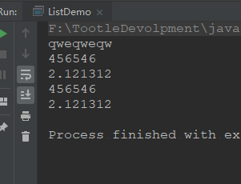
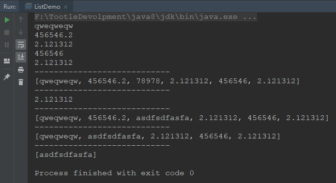
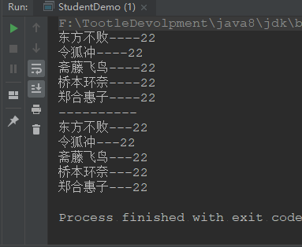
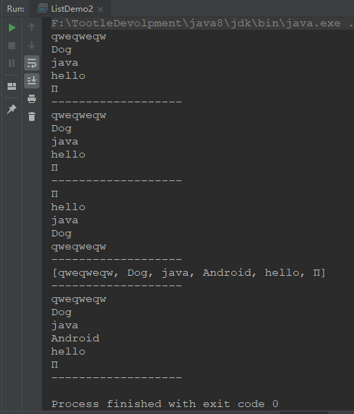

List集合
一、List集合介绍
- 有序的Collection（也成为序列），此接口中的用户可以对列表中每个元素插入位置进行精准的控制，用户可以根据元素的整数索引访问元素，并搜索列表中的元素。
- 与set不同，列表通常允许重复的元素
- 有序是指，怎样进的怎样出来，和我们说的排序不同。
二、通过案例学习List
1、有序性
2、可重复性
public class ListDemo {
public static void main(String[] args) {
List list = new ArrayList();
list.add("qweqweqw");
list.add(456546);
list.add(2.121312);
list.add(456546);
list.add(2.121312);
Iterator i = list.iterator();
while (i.hasNext()) {
System.out.println(i.next());
}
}
}运行结果

List集合的特有功能
//添加元素到指定位置
void add(int index,Object element);
//添加集合到指定位置
boolean addAll(int index,Collection c);
//获取指定位置上的元素
Object get(int index);
//修改指定位置上的元素
Object set(int index,Object element);
//删除指定位置上的元素
Object remove(int index);
//List迭代器
ListIterator
listIterator(); ListIterator
listIterator(int index); //输出指定位置到指定位置的元素
List subList(int fromIndex,int toIndex);
public class ListDemo {
public static void main(String[] args) {
List list = new ArrayList();
list.add("qweqweqw");
list.add(456546.2);
list.add(2.121312);
list.add(456546);
list.add(2.121312);
Iterator i = list.iterator();
while (i.hasNext()) {
System.out.println(i.next());
}
System.out.println("----------------------------");
list.add(2, 78978);
System.out.println(list);
System.out.println("----------------------------");
System.out.println(list.get(5));
System.out.println("----------------------------");
list.set(2, "asdfsdfasfa");
System.out.println(list);
System.out.println("----------------------------");
list.remove(1);
System.out.println(list);
System.out.println("----------------------------");
list.remove(2.121312);
System.out.println(list);
System.out.println("----------------------------");
//左开右闭
System.out.println(list.subList(1, 2));
}
}
运行结果：

List集合的遍历
public class StudentDemo {
public static void main(String[] args) {
List list = new ArrayList();
Student s1 = new Student("东方不败", 22);
Student s2 = new Student("令狐冲", 22);
Student s3 = new Student("斋藤飞鸟", 22);
Student s4 = new Student("桥本环奈", 22);
Student s5 = new Student("郑合惠子", 22);
list.add(s1);
list.add(s2);
list.add(s3);
list.add(s4);
list.add(s5);
Iterator iterator = list.iterator();
while (iterator.hasNext()) {
Student s = (Student) iterator.next();
System.out.println(s.getName() + "----" + s.getAge());
}
System.out.println("----------");
for (int i = 0; i < list.size(); i++) {
Student student = (Student) list.get(i);
System.out.println(student.getName() + "---" + student.getAge());
}
}
}运行结果：

List特有的迭代器
public class ListDemo2 {
public static void main(String[] args) {
List list = new ArrayList();
list.add("qweqweqw");
list.add("Dog");
list.add("java");
list.add("hello");
list.add("Π");
//遍历方式一
for (int i = 0; i < list.size(); i++) {
System.out.println(list.get(i));
}
System.out.println("-------------------");
//一般不用该方法遍历List列表
ListIterator listIterator = list.listIterator();
while (listIterator.hasNext()) {
System.out.println(listIterator.next());
}
System.out.println("-------------------");
//逆向,想逆向,先正向,无意义,一般不用
while (listIterator.hasPrevious()) {
System.out.println(listIterator.previous());
}
System.out.println("-------------------");
//遍历,如果有Java元素,添加 Android
ListIterator listIterator1 = list.listIterator();
while (listIterator1.hasNext()) {
if(listIterator1.next().equals("java")){
//迭代器遍历元素,集合不能修改元素
//list.add("qweqwe");
//该元素添加到"java"后面
listIterator1.add("Android");
}
}
System.out.println(list);
System.out.println("-------------------");
Iterator iterator = list.iterator();
while (iterator.hasNext()) {
System.out.println(iterator.next());
}
System.out.println("-------------------");
ListIterator listIterator2 = list.listIterator();
}
}运行结果：

List子类特点（面试题）
ArrayList：
底层是数组，查询快，增删慢
线程不安全，效率高
Vector：
底层是数组，查询快，增删慢
线程不安全，效率高
LinkedList：
底层是链表，查询慢，增删快
线程不安全，效率高
总结：
List集合继承Collection所有的方法
List有自己独有的一些方法
List可重复，有序性
List子接口也继承List所有的方法